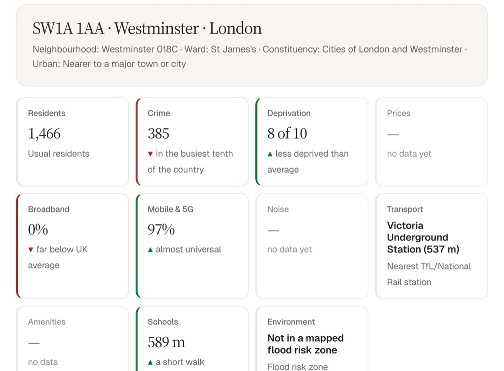
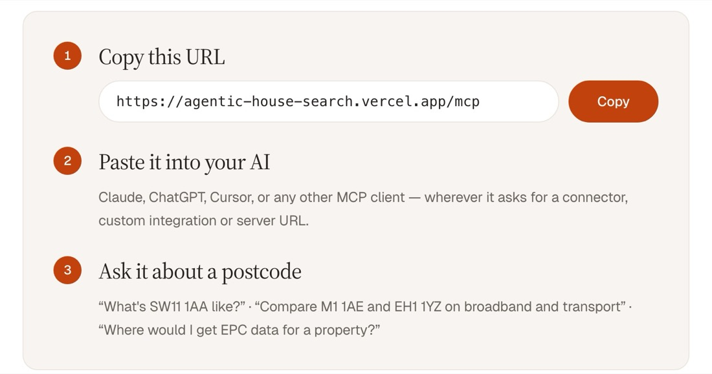
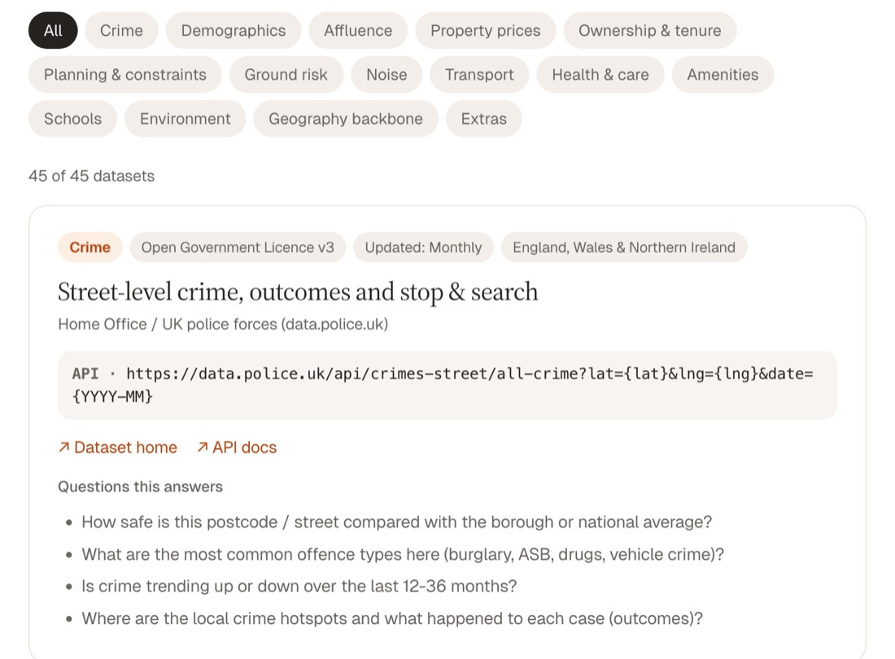

What the data actually says about a neighbourhood
Enter a UK postcode and read what government open data says about crime, prices, schools, transport and more.
Categories
By the numbers
Compiled 2 August 2026Coverage by nation
| Nation | Datasets covering it | Share |
|---|
Counted from data/registry.json when this page loads, never typed in, so it
cannot drift from what the registry holds. Each category opens the catalogue already
filtered. Coverage counts datasets whose own coverage statement includes the nation; it
is not a claim about resolution.
Three ways in
One provider layer underneath all three, so a threshold, a coverage gate or a caveat is written once and every surface agrees.

Postcode report
Type a postcode, read the answer. Eleven categories arrive independently, fetched in your browser, with the source and licence printed against every figure.
Get the report
MCP server
The same research for AI agents. Five tools, one URL to paste, nothing to install.
Connect an agent
Dataset registry
Every source underneath, with its endpoint, licence, cadence, coverage and the questions it can answer. Also as JSON and CSV.
Browse the registryTwo rules, which are most of the point
Neighbourhood data is easy to make impressive and hard to make truthful. These are the constraints behind every number shown here.
-
01
It never invents a comparison
Every band word, like "above the UK average", comes from a threshold table and sits next to the figure it describes. No score is conjured out of a weighting nobody can see.
-
02
It never pretends to cover ground it does not
A Scottish postcode is told that
data.police.ukexcludes Scotland, with a link to Police Scotland, rather than being shown a zero. Deprivation is computed against each nation's own index. See it for EH1 1YZ.
Use it
The compilation is CC0. Take the registry and point your own thing at it.
Add the MCP server to a client
Paste this URL into Claude, ChatGPT or any other MCP client. No account, no key, nothing to install.
https://agentic-house-search.vercel.app/mcp
Or in one command:
claude mcp add --transport http \ agentic-house-search \ https://agentic-house-search.vercel.app/mcpConnect an agent
Take the registry itself
Every entry, twelve fields each, also available as CSV.
curl -s https://agentic-house-search.vercel.app/data/registry.json
Or run the whole site locally:
git clone https://github.com/asturksever/\ agentic-house-search-data-registry cd agentic-house-search-data-registry python3 -m http.server 8000